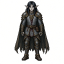
ノルドール Noldor
能力値 腕力 +0・敏捷 +1・耐久 +2・恩寵 +2
開始の持ち物 木の松明×3・レンバスのかけら×3・曲刀
ノルドールは『深遠なるエルフ』として知られる。エルフの諸族の中で最も学識に富み、創意に長けているからである。彼らはヴァリノールで二本の木の光を目にし、知識と技を大いに得た。背が高くしなやかでありながら、心は強く、大きな苦難にも耐え抜く。髪はたいてい黒く、目は灰色である。
心得: 弓素質: 歌唱
Sil-Q に職業は無い。決めるのは種族と家の 2 つだけで、 あとは経験点を技能に振って作る。選べる家は種族で決まる。
素質（affinity）はその技能値 +1 と、その技能に繋がる能力が 500 経験点安くなること——つまり最初の 1 つが只になる。 種族と家の素質が同じ技能に重なると熟達（mastery）で、技能値 +2・能力は 1,000 点安い。苦手（penalty）はその逆で、技能値 -1・能力は 500 点高い。 心得（proficiency）は決まった武器を持っているあいだ打撃 +1 になる （マニュアル §4.3）。

能力値 腕力 +0・敏捷 +1・耐久 +2・恩寵 +2
開始の持ち物 木の松明×3・レンバスのかけら×3・曲刀
ノルドールは『深遠なるエルフ』として知られる。エルフの諸族の中で最も学識に富み、創意に長けているからである。彼らはヴァリノールで二本の木の光を目にし、知識と技を大いに得た。背が高くしなやかでありながら、心は強く、大きな苦難にも耐え抜く。髪はたいてい黒く、目は灰色である。
心得: 弓素質: 歌唱
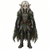
能力値 腕力 -1・敏捷 +1・耐久 +2・恩寵 +1
開始の持ち物 木の松明×3・レンバスのかけら×3・曲刀
シンダールは『灰色エルフ』であり、二本の木の祝福された光を見たことがない。だがその谺を、女王たるマイアのメリアンのうちに見出した。ノルドールほど学識も力も無いが、美しい声を持ち、歌に秀でている。
心得: 弓素質: 歌唱
能力値 腕力 +0・敏捷 -1・耐久 +3・恩寵 +1
開始の持ち物 木の松明×3・黒パン×5・曲刀
ドワーフは岩のように硬く頑固で、友誼にも敵意にも速い。人間の寿命をはるかに超えて長く生きるが、永遠ではない。背は低く、胸厚く、脚は太く、髭は長い。シンダールは彼らを『ナウグリム』、すなわち『発育を止められた民』と名づけた。
心得: 斧苦手: 射撃素質: 鍛冶
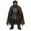
能力値 腕力 +0・敏捷 +0・耐久 +0・恩寵 +0
開始の持ち物 木の松明×3・黒パン×5・曲刀
エダインはベレリアンドの人間である。ノルドールとの交わりから多くを得て、山の彼方の同族よりも長く生きるようになった。だがエルフに比べれば脆く、武器や不運によってたやすく命を落とす。エダインはベレリアンド北部に住み、モルゴスの力を押しとどめるノルドールを助けている。
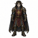
能力値 腕力 +0・敏捷 +1・耐久 +0・恩寵 +0
フェアノールはノルドールの中で最も偉大であったが、驕り高ぶり、頑なでもあった。彼はシルマリルを作り、後にモルゴスがそれを盗んだ。彼は一族を率いて海を越え、追ってベレリアンドへ渡った。フェアノール家の者は気性が激しいが、この上なく美しい作品を生み出す力を持つ。
素質: 鍛冶
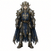
能力値 腕力 +0・敏捷 +0・耐久 +1・恩寵 +0
フィンゴルフィンは、その民をモルゴスの影から守るために一族を率いてベレリアンドへ入った。フェアノールの一党に裏切られ、彼らは北の氷の荒野を越えねばならなかった。その民は最も頑強で勇敢であり、オークに最も恐れられ、モルゴスに最も憎まれている。
素質: 意志
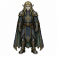
能力値 腕力 +0・敏捷 +0・耐久 +0・恩寵 +1
フィナルフィン自身はベレリアンドへ来なかったが、その家の多くがフィンゴルフィンの旗の下で旅を成した。彼らはノルドールの中で最も麗しく、最も賢い。ヴァンヤールの血を引く証として、みな金色の髪を持つ。
素質: 知覚
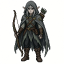
能力値 腕力 +0・敏捷 +0・耐久 +0・恩寵 +1
シンダールの多くはドリアスの森に住む。シンゴルが彼らの王であり、メネグロスからメリアンを傍らに置いて治めている。彼女の力がドリアスをモルゴスの下僕たちの目から隠し、シンダールはその影が伸びる前の日々と変わらず、狩りをし、宴を張ることができる。
素質: 歌唱
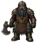
能力値 腕力 +0・敏捷 +1・耐久 +0・恩寵 +0
ノグロド、すなわち『うつろの館』は、青の山脈の下にあるドワーフの砦である。その深い館では鍛冶場の火が明るく燃え、ノグロドの鍛冶師はベレリアンド中に並ぶ者がない。
素質: 鍛冶
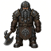
能力値 腕力 +1・敏捷 +0・耐久 +0・恩寵 +0
ベレゴスト、すなわち『大いなる砦』は、青の山脈の北の連なりにあるドワーフの城塞である。その屈強な戦士たちは、力と、戦に着ける恐ろしげな鉄の面で名高い。
素質: 意志
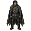
能力値 腕力 +0・敏捷 +0・耐久 +0・恩寵 +1
ベオル家の者は、苦難と悲しみに耐えることに揺るぎがなく、涙にも笑いにも遅い。その不屈さは、希望に支えられる必要がない。多くは褐色の髪に、褐色か灰色の目を持つ。
素質: 回避
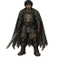
能力値 腕力 +0・敏捷 +1・耐久 +0・恩寵 +0
ハレスの民は学識を求めず、言葉少なである。人の多く集まるのを好まず、その多くは孤独を愛し、緑の森を自在にさすらう。多くは背が低く、黒い髪と黒い目を持つ。
素質: 隠密
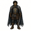
能力値 腕力 +1・敏捷 +0・耐久 +0・恩寵 +0
ハドル家の者は怒るのも笑うのも早く、戦いでは猛々しく、味方にも敵にも気前がよく、決断が速く、忠義に篤く、心は喜びに満ちている。多くは背が高く、亜麻色か金色の髪、青灰色の目、色白の肌を持つ。
素質: 打撃
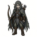
能力値 腕力 +0・敏捷 +1・耐久 +0・恩寵 +0
シンゴルが巡る星々の下でメリアンと出会ったとき、その民の多くは彼を再び見出すことを諦め、ヴァリノールへ船出すべく岸辺、ファラスへ向かった。中にはそこに留まり、船大工の長キーアダンとともに、中つ国の縁の港に住みついた者もいた。
素質: 射撃